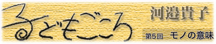

|  |
|
お昼休みに研究室で次の授業の準備をしていたら、信じられない放送が耳に入ってきた。 「学食からお知らせします。この頃、学食のお箸やスプーンが減っています。食事の後、お箸やスプーンはゴミ箱に捨てず、食堂に戻して下さい」 えっ、お箸やスプーンをゴミ箱に捨てちゃう学生がいるの？ 耳を疑った。こんなことを書くとジェンダーの先生から直ぐに批判文が何百通も届くと思うけれども、しかもここは「女子短大」！ もちろんお箸は割り箸ではないし、スプーンはいわゆる使い捨てのプラスティック製のものではない。食堂で食事をした学生は食後に返却カウンターにきちんと戻すらしいのだが、テーブルがいっぱいでやむなく食堂以外の場所で食事をした学生の中に、食器を戻すのが面倒くさい人がいるらしく、近くのゴミ箱に捨ててしまうらしいのだ。ああいうしっかりした質感のものをゴミ箱に捨てるという行為を私には想像すら出来ない。呆れた。 ほとんどの学生は私語をしないで真剣に授業に参加しているし、きちんと挨拶もする。我が校の学生の質はむしろよい方ではないかと思う。多分、モノの大切さを身近な大人から教えてもらえなかった可哀想な特定の学生が悪質行為を繰り返しているのだと思う。 ちょうどその頃、我が家の冷蔵庫がとうとう壊れた。15年も使用したのでリサイクルには回されないということだったが、私は引き取りの方が来るまでに冷蔵庫内を丁寧に水拭きした。この冷蔵庫は亡くなった夫が新婚の時に買ってくれたもの、そして闘病中の夫が食事療法の為に特別に注文していた無農薬野菜を保存してくれていたもの。私たちにとっては最も大切な電化製品だった。どうせ綺麗にしても廃棄処分される運命なのだが、だからこそ、いろいろあった15年間の働きへの感謝の気持ちをこめて隅々まで掃除した。 お箸をゴミ箱に捨ててしまうメンタリティーと捨てられる冷蔵庫を最後に磨くメンタリティーの違いはどこから来るのだろうか？ 彼女たちだって自分にとって意味あるモノは多分そう簡単には捨てない。意味がなくなる（例 食べるときは必要だったけれど、もう食べ終わったから箸は必要ないや）あるいは邪魔だと思う（例 おっと、授業が始まっちゃう。学食まで返しに行く時間がない！）とモノを粗末にしてしまう。（じゃあ捨ててしまえー）それが同時に他の人にとっても同じように意味あるものだという想像力が働かないのだ。 あるいは、そんな思考プロセスも踏まず、食事の後にトレイの上のモノをザラザラッとごみ箱に捨ててしまうファ−ストフード店感覚が身に付いていて、身体が勝手にそうしてしまうのかもしれない。ならばなお根が深い。 「モラルの低下」と言われているものの多くはこのような心理のもとで進んでいるのではないか。まわりの世界をどれだけ自分にとって意味あるモノとして捉え大切にできるか、また同時に、それらが他者（社会）にとっても意味あるモノだと想像できるか、なのだ。 幼児教育を専門にしている職業柄、彼女たちがどんな生活を過ごしてきたのか気になる。 では幼児はモノの意味をどう捉え、何を大切にしているのだろう。 幼稚園の子どもの引き出しを見ると驚くようなものが詰まっていて面白い。ある５歳児の引き出しの中身。ドングリ５個(幼児はとにかくドングリ・マツボックリ系が大好き。見つけたらポケットに入れないではいられない)、友だちからもらった手紙（これも５歳くらいになると頻繁にやりとりする）、キャラクターの絵のついたお菓子の空き箱、ストロー１本、カップに入った作りかけの泥団子、広告の紙を丸めて先にハートマークを付けた魔法の杖、なぜか石ころ３個。以前にカマキリの卵をしまっていた男の子がいて、引き出しから赤ちゃんカマキリがウワウワと生まれでてびっくりしたこともある。 子どもには、周囲のたくさんのモノの中から自分にとって意味あるモノをみつけ、ため込む習性がある。大人にとってはガラクタのように見えても、子どもにとってはどれも大切な宝物。それがどんな意味を子どもにもたらすのかは分からないし、多分もたらさない。ただ、取り巻く多くのモノの中から掛け替えのないモノを「自分で」選ぶ基準を子どもの中につくるだろう。 そして、それを大切にすることと、決別することも学ぶ。 その頃、５歳児の間に泥団子作りが流行っていた。丁寧に土に水を混ぜこねて丸め、白砂をかけて乾かし、また丸めて固める。まるでペットを育てているように片時も離さない。帰宅の時間になると前述の女の子が引き出しの中にしまったように、次の日のためにどこかに隠して帰る。こういう時の５歳児にとって世の中で一番大切なモノは「泥」あるいは「砂」なのだ。散歩に連れていっても景色など見ず、どこにどんな土があるか、どこの白砂がよいかが気になって、下ばかり見て歩いている。「泥団子」を中心に世界が回っているようだ。そして大人には考えられないほどに夢中になった後、こんな姿を見せることもある。 ５歳の女の子が土砂降りの日にプラスティックトレイをもってテラスに出ていく。室内の楽しそうな賑わいを背に、雨降りの園庭に向かって歩いていく後ろ姿が不思議な光景だったので、私は彼女の後を追った。トレイの上には「育てていた」泥団子がのっている。そして、テラスの端まで行くと泥団子を手にとり庭に放り投げた。雨に打たれてみるみるまに崩れる泥団子。彼女はそれを見届けると「泥団子さん、バイバイ」と呟いて、きっぱりと保育室に戻っていった。 彼女の中にどんな変化があったのだろうか。 大切にしていたモノを放り投げる、しかもわざわざ雨の日を選んで。その行為の一部始終から、何かが彼女の中で満ちて、そのモノを卒業したのだと思えた。それはスプーンをゴミ箱に捨ててしまうのとはまったく質の違う行為なのだ。きっと彼女は泥団子の次の何かを見つけて夢中になるだろう。しかし同時に、友達が泥団子を大切にしていたら、その気持ちに共感できるようになっていて、同じように大切に扱ってやることができるだろう。「満ちて卒業する」とはそういうことだ。モラルの原型はこうして遊びを通して、子どもの中に形作られていく。 幼児に学べよ！女子大生！ たっぷり遊ばせ、モノとの出会と決別を十分に体験させる。そして大切なことを繰り返し伝えていく。そんな風に子どもと向き合う大人がいたら、子どもはモノを大切にする人になるだろう。 |
| 河邉貴子（かわべ・たかこ） 1957年、東京生まれ。東京学芸大学教育学部教育学研究科修士課程修了。 東京都公立幼稚園にて12年間教諭として保育に携わった後、93〜96年まで東京都立教育研究所（現・東京都教職員研修センター）指導主事。夫の看病のために退職。ホスピスでの生活体験を『河辺家のホスピス絵日記』 にまとめる。その後、復帰し、99年より立教女学院短期大学助教授、同附属幼児教育研究所天使園園長。 主な著書に『河辺家のホスピス絵日記』(共著・東京書籍) 、『実践者のための保育研究ハンドブック』(共著・生活ジャーナル) 、『子ども理解とカウンセリングマインド』(共著・萌文書林) 、『健康の探求』(編著・相川書房)などがある。 |